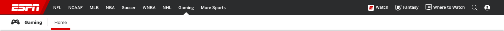

v20 · Как ESPN
Сверху бренд скошенной плашкой, игры в ряд, справа «Смотреть» и «Фэнтези» со значками — у ESPN фэнтези стоит ровно так. Второй строкой — выбранная игра и её разделы с подчёркиванием.
Образец — шапка ESPN (скрин 15.10)

Наша шапка по этому образцу · десктоп 1440 · кликается: игры, разделы, фэнтези